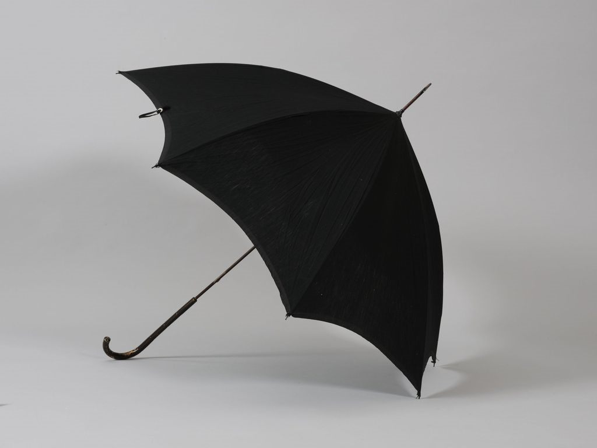

橋국제·중동
사진=Wikimedia Commons (자유 라이선스) · 기사 주제 관련 이미지
헤드라인트럼프, 美·이란 종전협정 서명… 3000억 달러 재건기금이 관문
도널드 트럼프 미국 대통령이 이란과의 종전협정에 서명했다. 파키스탄이 중재한 휴전이 공식 합의로 굳어졌지만, 3000억 달러 규모 재건기금과 핵 처리 문제가 이행의 최대 관문으로 남았다.
손기요 기자 · 2026.06.18
도널드 트럼프 미국 대통령이 이란과의 종전협정에 서명했다. 파키스탄이 중재한 휴전이 공식 합의로 굳어졌지만, 3000억 달러 규모 재건기금과 핵 처리 문제가 이행의 최대 관문으로 남았다.

지난 5월 한국을 찾은 외국인 관광객의 카드 소비가 사상 처음으로 2조 원을 넘어섰다. 관광 회복이 인천·서울 차이나타운 등 화인 자영업 상권에도 온기를 전하고 있다.

코스피가 장중 8970선을 넘어 사상 최고치를 새로 썼다. 9000 돌파 기대가 커지는 가운데 외국인·기관 수급과 대외 변수가 관건으로 꼽힌다.

지방선거 투표용지 부족 의혹을 수사 중인 검경 합동수사본부가 투표관리원 9명을 조사하고, 개표 오류 보고 누락 의혹과 관련해 전북선관위를 압수수색했다.


영국 QS 세계대학순위에서 대만 4개 대학이 200위 안에 들며 역대 최고 기록을 세웠다. 특히 국립성공대(成大)가 처음으로 200위권에 진입했다고 자유시보가 전했다.

TSMC 주가가 2,400위안을 회복하며 대만 증시(가권지수)가 장 초반 500포인트 넘게 급등해 46,000선에 재진입했다고 연합보가 전했다.

鄭麗文의 '양안 평화' 발언과 방미 성과를 둘러싸고 대만 정치권에서 공방이 벌어졌다. 발언의 진의와 성과의 실체를 두고 해석이 엇갈린다고 자유시보가 전했다.


화물연대 조합원이 숨진 사고를 낸 40대 비조합원에게 법원이 집행유예를 선고했다고 경향신문이 전했다.

장마와 무더위가 와도 끄떡없도록 부천시가 시민에게 우산을 빌려주는 '우산 복지'를 운영하고 있다고 경향신문이 전했다.

지난해 말 타이베이역에서 4명이 숨진 묻지마 살인 사건 이후 '나도 무차별 상해를 하겠다'는 모방 예고 글을 올린 남성이 처벌을 받게 됐다고 자유시보가 전했다.